v0.6.57 · one existing species corrected ·337 species · zero additions.
The conspicuous red-orange painted marks are removed from the active body map. A lighter neutral-gray palette keeps irregular pale scars and adds restrained surface grain.193 low-profile shells sit on real body triangles and follow the original jaw and swimming deformation. Select Anatomy → Barnacles and scarred skin to inspect them.
Benthic jaw-opening study → Jaw open opens the real lower source jaw. Open mouth · baleen study → Open mouth, followed by Anatomy → Baleen and oral cavity, gives a clearer view of the short cream upper racks, coarse source fringe and lower oral floor.
The seventeen supplied files were privately compared for scar pattern, irregular encrustation, folded eye detail and mouth/baleen visibility. They include duplicates, watermarked images and one illustration; they are not 17 independent original photographs and no supplied pixels are projected or redistributed.
NOAA describes adult skin lightening and mottled patches. Alaska Fish and Game describes white barnacles, orange lice and short off-white upper-jaw baleen. Orange cyamids occur naturally; removing the painted red-orange marks selects a different pattern rather than denying that variation.
Primary Cryptolepas research and its complete Figure 2 compare delicate modern/fossil shell folds and deep skin embedment. The exposed model shells therefore stay low, with radial ridges and recessed centres. They remain approximations without complete shell microanatomy or a measured infestation.
Young et al. 2015 provides rack-anatomy context; a repeated full-text request returned403, so no new complete article measurement is claimed. Clayton et al. 2026 reports near-closed benthic feeding and one Puget Sound roll/pitch context. Our 9.2-degree benthic opening and separate 27.5-degree wider anatomy display are selected, not recovered jaw measurements or a claim that wide gape is normal benthic suction. The 16-second timing is illustrative.
The supplied Digital Life / Johnson Martin Model100A generic adult female remains byte-exact, including its original two 1024-square maps. It is an artist reconstruction with Howle/Fish collaboration and BOEM support, not a living scan, NOAA certification or measured named specimen. Active body/baleen maps are disclosed CC BY-NC4.0 derivatives; original eyes remain active. The source has no normal map: our grain/normal/roughness fields are new numerical artwork, not measured optics. Rights and source scope · Active derivative hashes and algorithm.
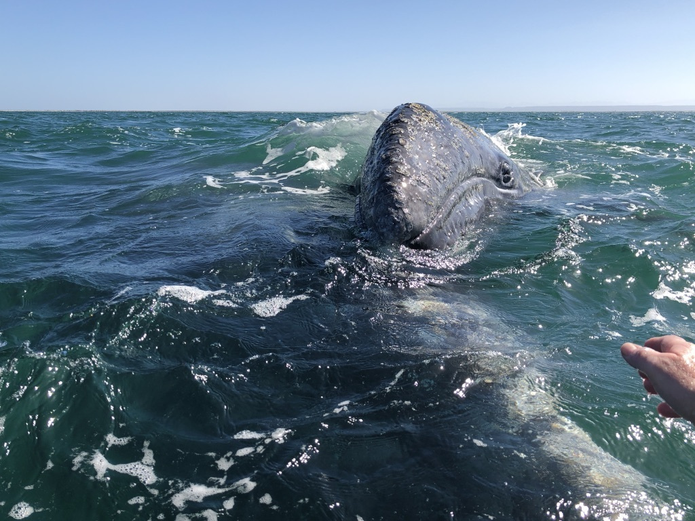
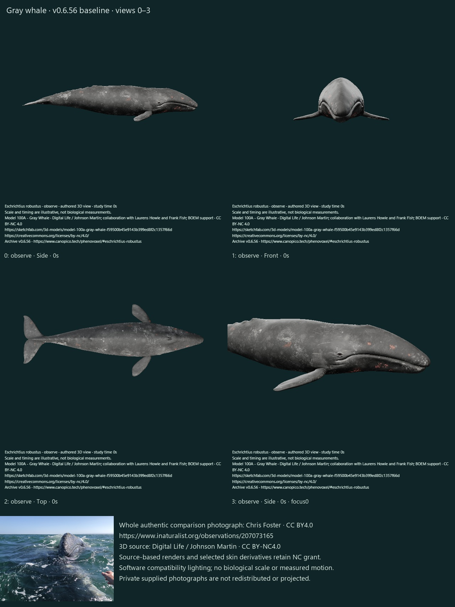
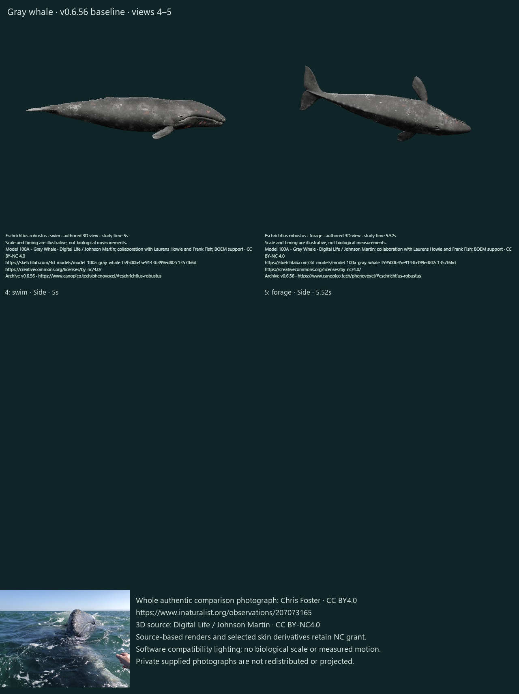
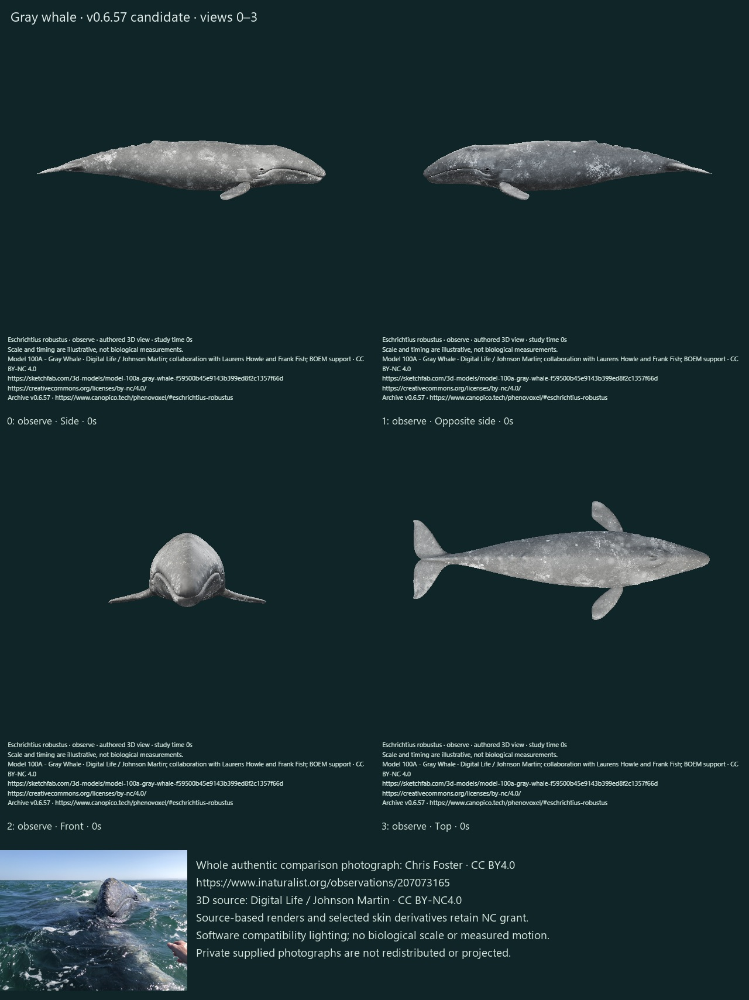
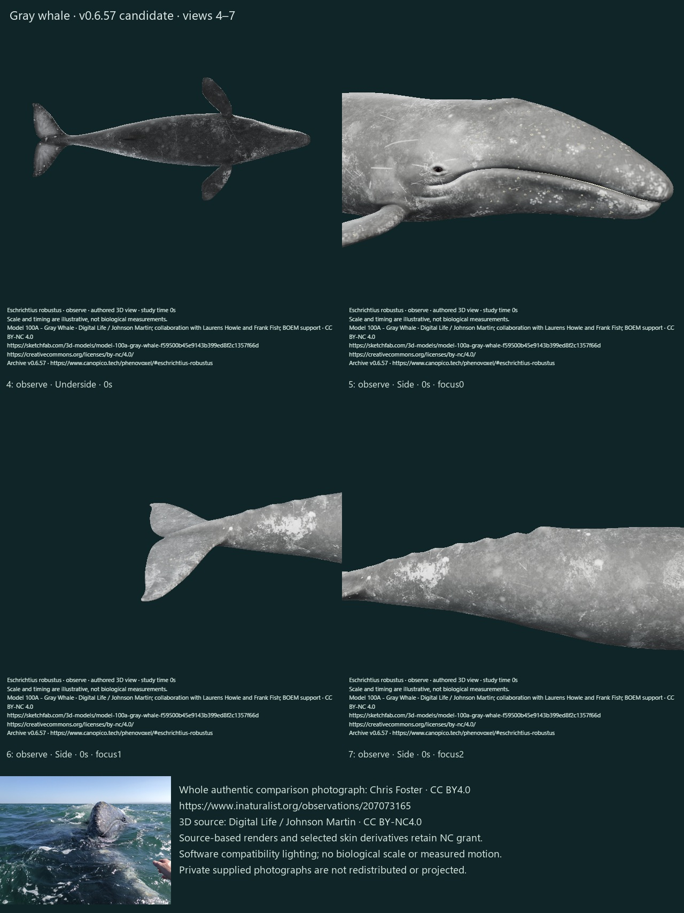
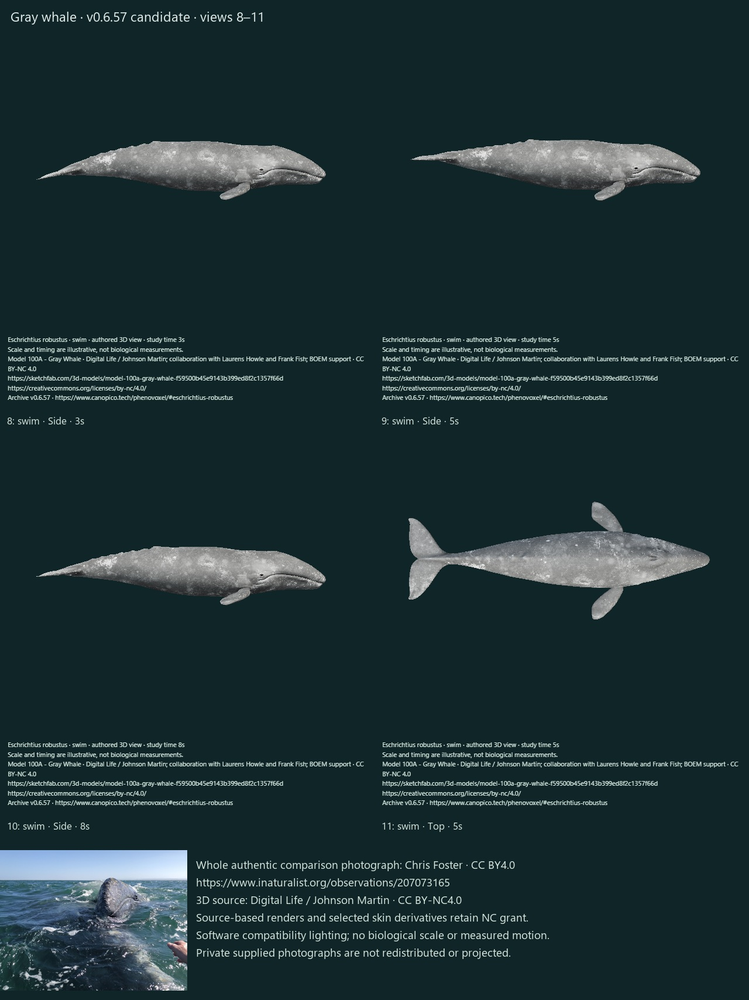
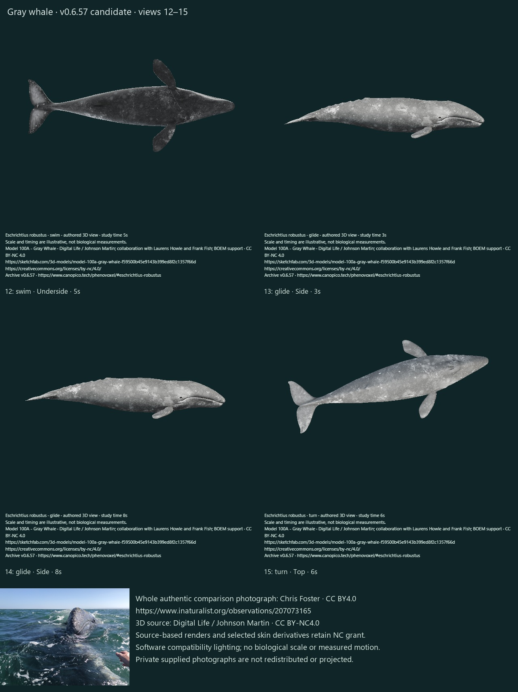
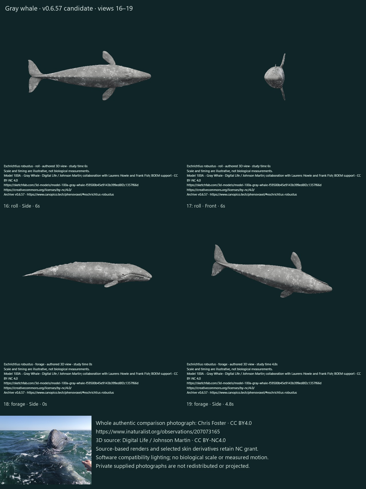
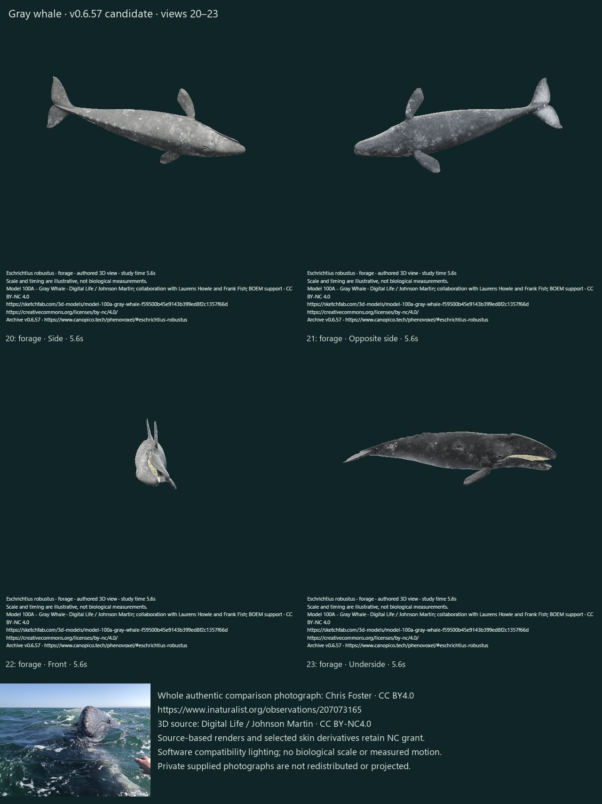
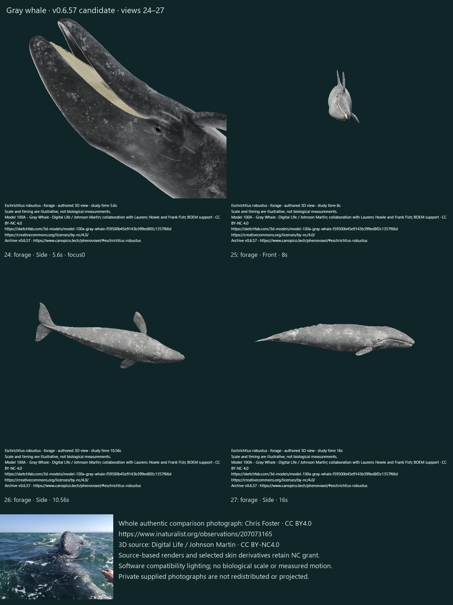
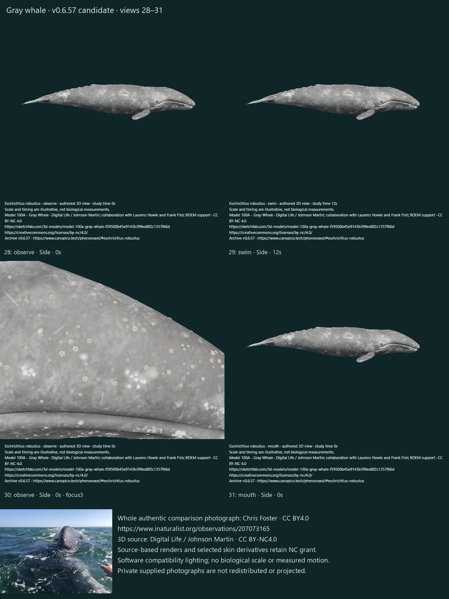
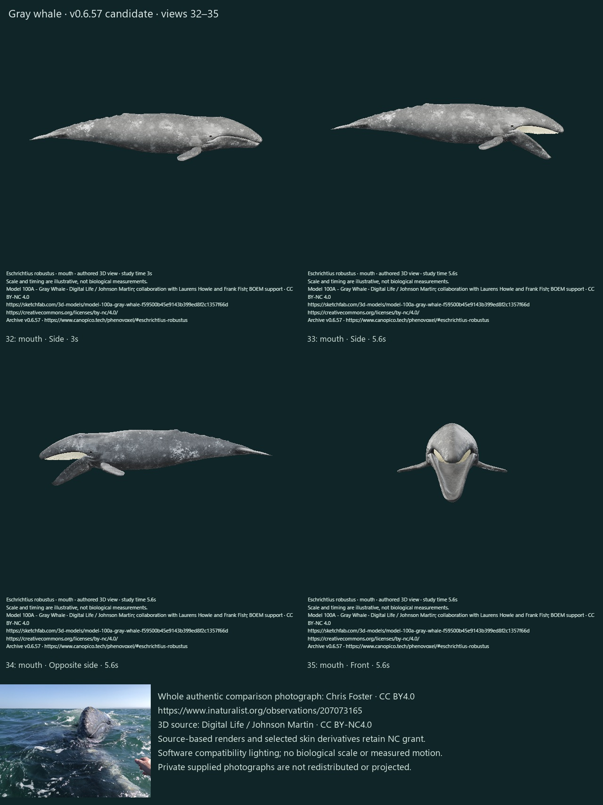
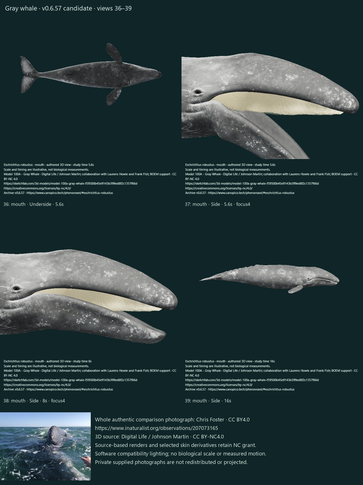
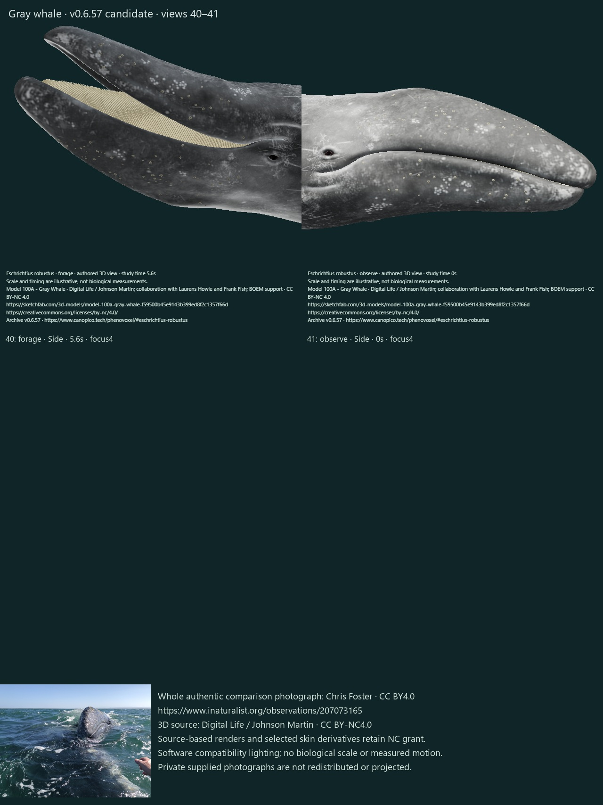
Six actual public baseline states and 42 compiled candidate states. All states individually inspected. Software compatibility only; final WebGL optics remain unreviewed. The screenshots are external-form studies, not scientific validation.
| State | Observed result and limit |
|---|---|
| 0 · observe / Side / 0s | Lighter neutral-gray body and retained irregular pale scars; conspicuous red painted points absent. Generic source shape, not calibrated color. |
| 1 · observe / Opposite side / 0s | Opposite-side gray skin and asymmetric scars retained. Lighting darkens this side; displayed brightness is not a species-wide reflectance value. |
| 2 · observe / Front / 0s | Closed front head retains source eye/lip/pectoral anatomy; neutral posture is separate from mouth display. |
| 3 · observe / Top / 0s | Dorsal mottles, flippers and broad notched horizontal flukes retained without a dorsal fin. No photometric specimen match. |
| 4 · observe / Underside / 0s | Ventral view retains mottles and appendage silhouettes. Shaded appearance is contextual lighting rather than a second measured pigment field. |
| 5 · observe / Side / 0s / focus0 | Head close-up shows original eye folds/linear scars and separate pale low-profile shell clusters; original head proportions remain unmeasured. |
| 6 · observe / Side / 0s / focus1 | Fluke notch, caudal skin scars and source foil surface retained. No measured foil deformation or thrust. |
| 7 · observe / Side / 0s / focus2 | Low hump and knuckles retained beneath lighter irregular source scars. Surface remains artist-derived. |
| 8 · swim / Side / 3s | Early selected posterior stroke bends the original body; head retains source form. Rate/excursion is illustrative. |
| 9 · swim / Side / 5s | Mid-stroke retains scars, skin and attached detail; no separate floating appendages seen at this scale. No solved trajectory. |
| 10 · swim / Side / 8s | Later posterior phase differs while the original head/skin remain coherent. Full swimming mechanics remain partial. |
| 11 · swim / Top / 5s | Top stroke view retains broad flippers/flukes and mottles; dorsal width is not fitted to a measured individual. |
| 12 · swim / Underside / 5s | Underside stroke retains source outline and scars. No verified ventral muscle/contact mechanics. |
| 13 · glide / Side / 3s | Early glide has a selected residual stroke on the original skin; no buoyancy solution. |
| 14 · glide / Side / 8s | Glide settles to the source posture at eight display seconds; no residual visible fluke cycle. |
| 15 · turn / Top / 6s | Selected yaw changes the body orientation without changing source skin or anatomy; steering forces are not solved. |
| 16 · roll / Side / 6s | Right-side roll displays the same gray body and source appendages; posture only, no assumed universal side preference. |
| 17 · roll / Front / 6s | Front roll shows the original body rotated rather than inflated. No measured maneuver trajectory. |
| 18 · forage / Side / 0s | Feeding approach starts with closed source lips; skin remains the lighter derivative. |
| 19 · forage / Side / 4.8s | Right-roll/head-down context partly occludes the aperture from this whole-body angle; use the dedicated oral focus. |
| 20 · forage / Side / 5.6s | Whole-body benthic aperture is bounded and partly occluded from the side. No rorqual pouch or arbitrary trunk inflation. |
| 21 · forage / Opposite side / 5.6s | Opposite side retains scars and original surface through the benthic pose. Oral detail depends on camera angle. |
| 22 · forage / Front / 5.6s | Front benthic view reveals a pale short baleen strip between the jaws; exterior display does not establish suction. |
| 23 · forage / Underside / 5.6s | Underside/context view clearly exposes cream baleen and the separated lower jaw. No sediment/prey transport. |
| 24 · forage / Side / 5.6s / focus0 | Head focus shows short cream racks and the original opening lower lip/floor, with attached pale shells. Eye remains the original source geometry. |
| 25 · forage / Front / 8s | Closure reduces the front oral opening while the animal remains rolled; this is not proof of filtration or swallowing. |
| 26 · forage / Side / 10.56s | Closed-mouth benthic hold retains the source exterior without a rorqual-style inflated abdomen. |
| 27 · forage / Side / 16s | Final feeding pose returns to the original level shape and closed mouth; no residual jaw inflation. |
| 28 · observe / Side / 0s | Observe after feeding restores closed source posture, gray skin and attached shells. |
| 29 · swim / Side / 12s | Finite swimming endpoint recovers the original posture; no drift visible. |
| 30 · observe / Side / 0s / focus3 | Macro inspection separates pale low-profile shell relief from flat broad scars. Fine shell microanatomy remains simplified and source-atlas detail is limited. |
| 31 · mouth / Side / 0s | Oral study starts at the closed source pose; not an open-mouth feeding claim. |
| 32 · mouth / Side / 3s | Early oral approach is still closed before the selected opening window; timing is authored. |
| 33 · mouth / Side / 5.6s | Wide oral display visibly lowers the original jaw and exposes a cream upper rack; no replacement lip overlay or trunk pouch. |
| 34 · mouth / Opposite side / 5.6s | Opposite oral display exposes the other retained cream rack and original lower jaw/floor. |
| 35 · mouth / Front / 5.6s | Front open mouth exposes the original lower oral floor and upper baleen. No reconstructed tongue/hyoid suction controller. |
| 36 · mouth / Underside / 5.6s | From directly below, the original oral floor occludes much of the rack; camera visibility, not loss of geometry. |
| 37 · mouth / Side / 5.6s / focus4 | Dedicated oral focus clearly shows short cream upper plates and coarse source fringes above the moving lower floor. Plate/tissue dynamics remain unmeasured. |
| 38 · mouth / Side / 8s / focus4 | Closing oral focus narrows the gap without moving the upper baleen; closure is illustrative. |
| 39 · mouth / Side / 16s | Oral endpoint returns to the original closed source shape. |
| 40 · forage / Side / 5.6s / focus4 | Benthic oral focus clearly separates upper cream baleen from the lower jaw and retains attached shell clusters; suction/filtration remain unfinished. |
| 41 · observe / Side / 0s / focus4 | Closed oral focus restores the source lips, original eye, scars and selected pale shell relief. |
Full local software checks: 397 passed, zero failed. Narrow final metadata/history checks and production build also pass when recorded in publication proof. These checks establish software/source properties, not biological accuracy.
All other 336 species, all 337 identity/taxonomy/photo/occurrence fields, prior artist sources and original dirty checkout are preserved. The six new focused checks cover palette, material separation, shell attachment, original jaw/rack separation, exact reset, history and opt-in texture filtering. The first full run found a missing status-inventory file; it was generated and 20 targeted checks passed before the final full rerun. Initial visual review found regular bright rings and blocky close-up sampling; shell shape/pigment and texture filtering were corrected before this final review. The benthic opening check was updated for the disclosed larger aperture, while all original history hashes remain intact.
Actual PNGs and inspection ledger. Earlier requested beluga, narwhal and common-dolphin corrections remain unfinished; no other species was advanced. Schedules remain off.